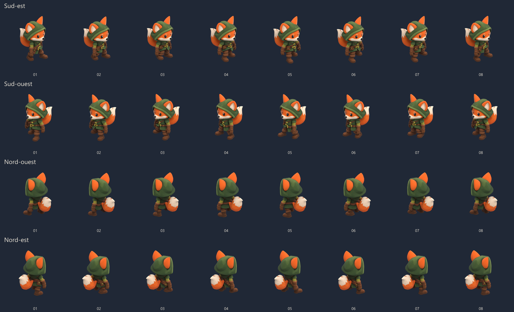

Vulpin · premier essai de marche
8 poses fixes du modèle Meshy, rendues dans 4 directions. Les images défilent sans interpolation.
Sud-est
Sud-ouest
Nord-ouest
Nord-est
Télécharger les sprites · Ouvrir les 8 poses dans Blender · Vérifications
Voir les huit poses côte à côte

Modèle et textures d'origine conservés. Cette proposition n'est pas intégrée au jeu. Les contrôles de contact au sol ne garantissent pas à eux seuls la qualité de toutes les articulations.